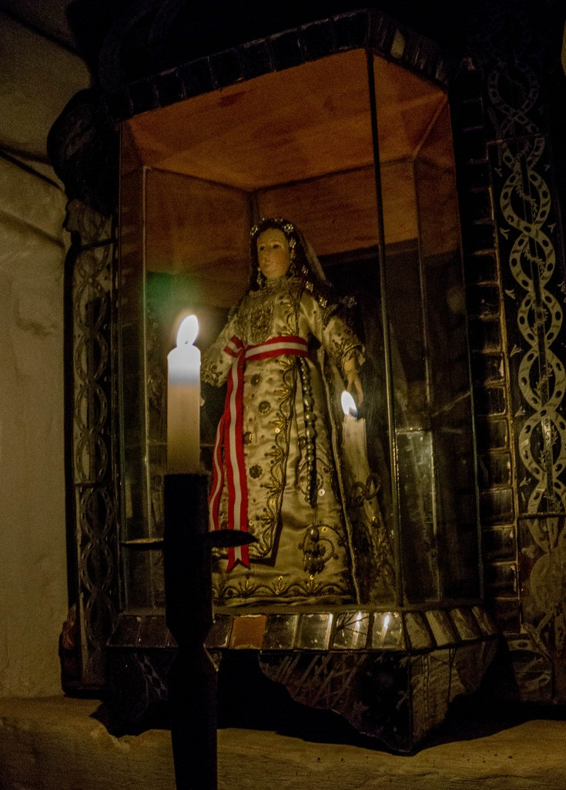

Nie wiem nawet ile razy już to słyszłam: Nie lubię zwiedzać, nie lubię muzeów – nudzi mnie to.
Nie pamiętam nawet ile razy sama coś takiego powiedziałam, bo po okresie muzealnym nadszedł czas, kiedy niemal każda wizyta w muzeum wydawała się koszmarem. Nieważne czy w środku było coś interesującego – cały czas byłam na nie. I nie było żadnych wyjątków – raz nawet będąc przed Tate Modern w Londynie zdecydowałam się nie wchodzić do środka, a zawsze wcześniej było to miejsce, które mi się podobało (najbardziej podobało mi się tam moje każdorazowe zdziwienie jak bardzo nie rozumiem sztuki współczesnej).
Nie będę więc przekonywać nikogo, że ma się zmuszać i zwiedzać, bo może drugi raz w to miejsce nie wróci. Ciężko się zmusić, a nawet jeśli to się uda to raczej fajnie nie będzie.
Jest jednak zwiedzanie, które jest zupełnie innym zwiedzaniem – i jest to zwiedzanie nocą. Wydawać by się mogło, że te kilka godzin różnicy to tyle co nic. A jednak… noc może zmienić wszystko.
Ostatnim takim miejscem zwiedzanym przeze mnie po ciemku był Klasztor Św. Katarzyny w Arequipie, w Peru (Monasterio de Santa Catalina). Wcale się tam na początku nie wybierałam, bo kościoły i klasztory nudzą mnie zazwyczaj jeszcze bardziej niż muzea. Nie wiem jak wygląda to miejsce w środku dnia, czy jest tam dużo turystów czy nie… ale muszę powiedzieć, że w nocy to miejsce jest magiczne.
Tak, wiem, 'magiczne’ to takie trochę wyświechtane słowo, teraz wszystko co spotykamy w podróży jest magiczne. Szukam jednak innego przymiotnika i… jest cieżko.
Wieczorem w tym XVI-wiecznym klasztorze jest pusto, turystów jest niewielu, a ci co są znikają gdzieś w zakamarkach – nietrudno jest zniknąć, bo wiele pomieszczeń jest zwiedzanych przy blasku świec, na wąskich uliczkach są co prawda latarnie, ale światło dają tak słabe, że idąc ma się wrażenie, że człowiek nagle przeniósł się kilka wieków wstecz.
Warto wziąć przewodnika – historia klasztoru jest fascynująca, a słuchając opowieści można się cieszyć, że nie jesteśmy jedną z zakonnic żyjących tu kilka wieków temu (chociaż… z ich punktu widzenia to pewnie nie było takie złe).

Nocne zwiedzanie z przewodnikiem to nie to samo co nocne spacery po mieście. Historie, których wtedy słuchamy ożywają i fascynują, a te same miejsca mogą się okazać ciekawsze niż za dnia.
Nie byłam jeszcze na zbyt wielu nocnych wycieczkach, ale wszystkie na których byłam robiły wrażenie, czy to było zwiedzanie Zamku w Poznaniu, dzielnicy Czerwonych Latarni w Amsterdamie czy też zoo w Singapurze.
Jest też jedna wycieczka, na której nie byłam i nie mogę tego odżałować – to nocne zwiedzanie cmenarza w Santiago de Chile. Akurat w sierpniu, kiedy tam byłam, wycieczki nie były organizowane. Ale ja tam pewnie jeszcze kiedyś wrócę!
I can’t even count how many time I’ve heard it: I don’t like sightseeing, I hate musems – it’s so boring!
I can’t even say how many times those where my own words because after the period of museum fascination, there was time for me when almost every visit to a museum appeared to be a nightmare. It wasn’t really important if there was anything interesting inside – whatever there was I was against the visit.
There were no exceptions – once I was standing in front of Tate Modern in London and I decided not to enter, and I must admit that it had always been a fascinating place for me before (the most fascinating was my surprise how little I understand modern art).
I’m not going to try to convince that you should visit places anyway because you might never go back. It’s hard to force yourself, and even if you do, well it probably won’t be fun.
However, there is a type of sightseeing that makes visiting places a totally different experience – it’s sightseeing by night. You might think that a few hours won’t make much difference, but you’re wrong, it can change everything.
The last place I visited by night w St. Cathrine Monastery (Monasterio de Santa Catalina) in Arequpia, Peru. At first I was not even planning of visiting as I dislike visiting churches and monasteries evern more than I dislike visiting museums.
I have no idea what this place is like during the day or how many tourists there are, but at night it’s magic. I know that 'magic’ is this often used adjective by all the travellers and often it means nothing but I’m searching other words and I can’t find them because this is how it is: magic.
When you visit theis 16th century monastery after the sunset, there are not many tourists, and those who are there seem to disappear in dark corners of the monastery. Many of the rooms are viewed by the candlelight, and although there’re lanterns in narrow cobbled streets the light is dim – you walk and you feel you have moved a few centuries back.
It’s worth paying for a guide – the history of the monastery is fascinating, and when you walk and listen to it, you’ll probably be happy that you are not one of the XVIthe century nuns (although… from their point of view it might have been not so bad).
Night sightseeing with a guide is not the same as a walk at night – when you listen to stories they become alive and you’re totally engrossed, the very same places often seem more interesting than during the day.
I haven’t done much night sightseeing yet, but all the trips I did were impressive, whether it was a visit to the Castle in Poznań, my hometown, Red Lights District in Amsterdam or the zoo in Singapore.
There’s one trip I haven’t done and I wish I did: night sightseein of a cemetary in Santiago de Chile. In August, when I was there it was not available, but… I’ll go there again one day!


{kind=link}
{kind=link}